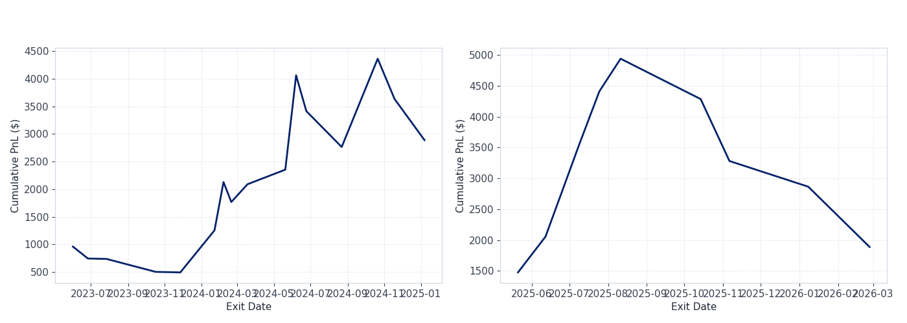
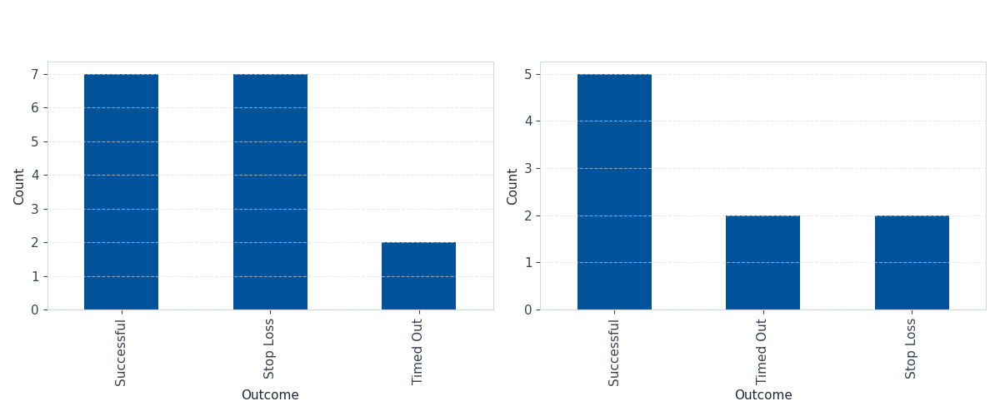

| window | metric | value | |
|---|---|---|---|
| 0 | in-sample | Average Return per Trade | 0.038031 |
| 1 | in-sample | Annualized Sharpe Ratio | 0.967652 |
| 2 | in-sample | Win Rate | 0.437500 |
| 3 | in-sample | Profit Factor | 1.802024 |
| 4 | in-sample | Max Drawdown ($) | -1475.200000 |
| 5 | in-sample | Total Trades | 16.000000 |
| 6 | out-of-sample | Average Return per Trade | 0.021541 |
| 7 | out-of-sample | Annualized Sharpe Ratio | 0.930569 |
| 8 | out-of-sample | Win Rate | 0.555556 |
| 9 | out-of-sample | Profit Factor | 1.617702 |
| 10 | out-of-sample | Max Drawdown ($) | -3054.950000 |
| 11 | out-of-sample | Total Trades | 9.000000 |
Breakout Trading Strategy Backtest
Course: FINTECH 533
Topic: Breakout Trading Strategy
Asset: NVDA
Data Source: IBKR via ShinyBroker
Overview
This project backtests a simple breakout trading strategy on NVDA using daily price data pulled from IBKR via ShinyBroker. The idea is pretty straightforward: enter long when price clears a recent high, and exit either at a stop-loss or after a fixed holding period.
I kept the implementation simple on purpose - no fancy filters, just a clean entry rule with defined exits so the results are easy to trace and explain.
Strategy Logic
The strategy goes long when the closing price exceeds the highest high of the past 20 trading days - the idea being that a new 20-day high suggests momentum is picking up and price might continue in the same direction. Once in a trade, there are two ways to exit: a 5% stop-loss below the entry price, or a forced close after 10 trading bars if the stop hasn’t been hit. Only one position is held at a time, so new signals are skipped until the current trade closes.
Asset Selection
I chose NVDA (NVIDIA Corporation) for this backtest.
Before picking NVDA I checked a few other candidates - SPY, TSLA, and AMD. SPY barely generates signals because it moves slowly; TSLA had plenty of breakouts but a lot of them reversed quickly. NVDA had the cleanest combination of frequent signals and actual follow-through, especially during 2023-2024. Breakout logic tends to work better on stocks that actually trend, so it seemed like the right fit.
Breakout Definition
A breakout is defined as:
today’s closing price is greater than the highest high of the previous 20 trading days
The full set of parameters:
- Asset: NVDA
- Lookback window: 20 trading days
- Entry rule: Close > previous 20-day high
- Direction: Long only
- Stop-loss: 5% below entry price
- Timeout exit: 10 trading bars (not calendar days)
- Position size: 100 shares per trade
Data and Assumptions
Daily bar data was downloaded from IBKR through ShinyBroker, covering roughly three years of history.
A few simplifying assumptions were made to keep things clean:
- no commissions
- no slippage
- trades execute at the observed closing price
- daily bars only
- only one open position at a time
If the daily low dips below the stop-loss level on a given bar, the trade is assumed to exit at the stop price that day.
Walk-Forward Design
To reduce overfitting risk, the backtest is split into two non-overlapping windows:
- In-sample (~2 years): used to confirm the parameters make sense
- Out-of-sample (~1 year): held out entirely, tested with the same parameters unchanged
The equity curve and metrics below are reported separately for each window. The out-of-sample results are the ones that actually matter.
Backtest Results
Equity Curve
In-sample and out-of-sample cumulative P&L shown side by side.

Trade Outcome Analysis
Each trade falls into one of three buckets:
- Successful: closed with a profit
- Timed Out: hit the 10-bar limit, closed at market regardless of P&L
- Stop Loss: exited when the 5% stop was triggered

Performance Metrics
Metric Notes
- Average Return per Trade - mean return across all completed trades
- Annualized Sharpe Ratio - annualized using
sqrt(trades_per_year)estimated from the date range, notsqrt(252), since returns are per-trade with variable holding periods. Risk-free rate assumption: 3.75% annually (RISK_FREE_RATE = 0.0375) - Win Rate - fraction of trades that closed with positive P&L
- Profit Factor - gross profit divided by gross loss; above 1.0 means winners outweigh losers in dollar terms
- Max Drawdown ($) - largest peak-to-trough drop in cumulative P&L
- Total Trades - number of completed trades in each window
Trade Blotter
Full trade log below. holding_bars is trading days held; calendar_days_held is calendar days between entry and exit.
| entry_timestamp | exit_timestamp | entry_price | exit_price | size | direction | stop_price | holding_bars | calendar_days_held | pnl | return | outcome | |
|---|---|---|---|---|---|---|---|---|---|---|---|---|
| 0 | 2023-05-17 | 2023-06-01 | 30.18 | 39.7700 | 100 | Long | 28.6710 | 10 | 15 | 959.00 | 0.317760 | Successful |
| 1 | 2023-06-14 | 2023-06-26 | 43.00 | 40.8500 | 100 | Long | 40.8500 | 10 | 12 | -215.00 | -0.050000 | Stop Loss |
| 2 | 2023-07-13 | 2023-07-27 | 45.98 | 45.9000 | 100 | Long | 43.6810 | 10 | 14 | -8.00 | -0.001740 | Timed Out |
| 3 | 2023-10-11 | 2023-10-17 | 46.81 | 44.4695 | 100 | Long | 44.4695 | 10 | 6 | -234.05 | -0.050000 | Stop Loss |
| 4 | 2023-11-10 | 2023-11-27 | 48.34 | 48.2400 | 100 | Long | 45.9230 | 10 | 17 | -10.00 | -0.002069 | Timed Out |
| 5 | 2024-01-08 | 2024-01-23 | 52.25 | 59.8700 | 100 | Long | 49.6375 | 10 | 15 | 762.00 | 0.145837 | Successful |
| 6 | 2024-01-24 | 2024-02-07 | 61.36 | 70.1000 | 100 | Long | 58.2920 | 10 | 14 | 874.00 | 0.142438 | Successful |
| 7 | 2024-02-09 | 2024-02-20 | 72.13 | 68.5235 | 100 | Long | 68.5235 | 10 | 11 | -360.65 | -0.050000 | Stop Loss |
| 8 | 2024-03-04 | 2024-03-18 | 85.24 | 88.4600 | 100 | Long | 80.9780 | 10 | 14 | 322.00 | 0.037776 | Successful |
| 9 | 2024-05-06 | 2024-05-20 | 92.14 | 94.7800 | 100 | Long | 87.5330 | 10 | 14 | 264.00 | 0.028652 | Successful |
| 10 | 2024-05-23 | 2024-06-07 | 103.80 | 120.8900 | 100 | Long | 98.6100 | 10 | 15 | 1709.00 | 0.164644 | Successful |
| 11 | 2024-06-13 | 2024-06-24 | 129.61 | 123.1295 | 100 | Long | 123.1295 | 10 | 11 | -648.05 | -0.050000 | Stop Loss |
| 12 | 2024-08-19 | 2024-08-22 | 130.00 | 123.5000 | 100 | Long | 123.5000 | 10 | 3 | -650.00 | -0.050000 | Stop Loss |
| 13 | 2024-10-07 | 2024-10-21 | 127.72 | 143.7100 | 100 | Long | 121.3340 | 10 | 14 | 1599.00 | 0.125196 | Successful |
| 14 | 2024-11-06 | 2024-11-18 | 145.61 | 138.3295 | 100 | Long | 138.3295 | 10 | 12 | -728.05 | -0.050000 | Stop Loss |
| 15 | 2025-01-06 | 2025-01-07 | 149.43 | 141.9585 | 100 | Long | 141.9585 | 10 | 1 | -747.15 | -0.050000 | Stop Loss |
| 16 | 2025-05-07 | 2025-05-21 | 117.06 | 131.8000 | 100 | Long | 111.2070 | 10 | 14 | 1474.00 | 0.125918 | Successful |
| 17 | 2025-05-29 | 2025-06-12 | 139.19 | 145.0000 | 100 | Long | 132.2305 | 10 | 14 | 581.00 | 0.041742 | Successful |
| 18 | 2025-06-24 | 2025-07-09 | 147.90 | 162.8800 | 100 | Long | 140.5050 | 10 | 15 | 1498.00 | 0.101285 | Successful |
| 19 | 2025-07-11 | 2025-07-25 | 164.92 | 173.5000 | 100 | Long | 156.6740 | 10 | 14 | 858.00 | 0.052025 | Successful |
| 20 | 2025-07-28 | 2025-08-11 | 176.75 | 182.0600 | 100 | Long | 167.9125 | 10 | 14 | 531.00 | 0.030042 | Successful |
| 21 | 2025-09-30 | 2025-10-14 | 186.58 | 180.0300 | 100 | Long | 177.2510 | 10 | 14 | -655.00 | -0.035106 | Timed Out |
| 22 | 2025-10-28 | 2025-11-06 | 201.03 | 190.9785 | 100 | Long | 190.9785 | 10 | 9 | -1005.15 | -0.050000 | Stop Loss |
| 23 | 2025-12-23 | 2026-01-08 | 189.21 | 185.0400 | 100 | Long | 179.7495 | 10 | 16 | -417.00 | -0.022039 | Timed Out |
| 24 | 2026-02-25 | 2026-02-26 | 195.56 | 185.7820 | 100 | Long | 185.7820 | 10 | 1 | -977.80 | -0.050000 | Stop Loss |
Discussion
NVDA had a strong trending run through most of the backtest period, which gave a momentum-based entry favorable conditions. The profit factor holding above 1.0 in both windows - despite a win rate under 50% in-sample - means the winning trades were large enough to cover the losers. That’s fairly typical for breakout strategies: you get stopped out often but occasionally catch a real move.
The stop-loss is doing a lot of the risk management. Several trades got cut within a few days, which kept individual losses contained. The timeout exit is blunter - a few of those timed-out trades were nearly flat, and a longer holding window might have changed the outcome, though it’s hard to say without testing it.
The out-of-sample window is the more honest read on whether the signal actually has edge. In-sample results on a trending stock during a bull run aren’t that surprising. Main things to keep in mind: no slippage or commissions modeled, single asset, no regime filter. The Sharpe around ~0.95 is reasonable but per-trade annualization can distort the number relative to a proper daily MTM series, so take it as directional.
Reproducibility
All output files are generated by the Jupyter notebook and saved to the outputs/ folder:
outputs/trade_blotter.csvoutputs/metrics_summary.csvoutputs/equity_curve.pngoutputs/trade_outcomes.png